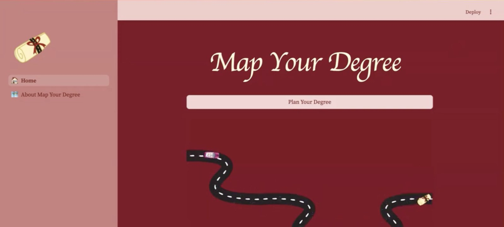

Plan
Explore
Stay on track
Graduate

01/ Project One
Map Your Degree
Degree Planning Tool
An interactive tool designed to help students plan, visualize, and track their degree progress. Map Your Degree provides a clear and customizable path through coursework, making it easier to explore options and stay on track toward graduation.
Watch the Demo →turn uncertainty
into a plan.